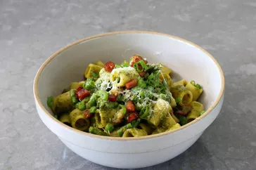

Pasta Primavera recipe

Description
This pancetta primavera rigatoni really is a tremendous bowl of pasta. Thanks to the pancetta, it's rich and decadent, but thanks to all the herbs and veggies, it's also fresh and vibrant.
ingredients
- 3 tablespoons olive oil, divided
- 8 ounces pancetta, diced
- 8 ounces mezzi rigatoni pasta
- 1 cup shelled fresh English peas
- 1 cup asparagus, cut into 1/2 inch pieces1 cup asparagus, cut into 1/2 inch pieces
- 1 cup Italian parsley leaves
- 1 cup basil leaves
- 1/2 cup packed mint leaves
- 3 cloves garlic, peeled
- 1/2 lemon, juiced
- 1/2 teaspoon kosher salt, plus more to taste
- 1/4 cup water
- 1/2 cup grated Pecorino cheese, plus more as needed
Steps
- Pour 2 tablespoons of the olive oil to a large pan, and set heat to medium. Add diced pancetta, and cook, stirring occasionally, until pancetta is browned, and most of the fat has rendered out, 7 to 10 minutes. Turn off heat.
- Remove some pancetta and reserve to garnish the top if desired. Pour out some of the excess pancetta fat from the pan if desired, but leaving at least 2 or 3 tablespoons.
- Add green onions, and turn heat to medium-low. Sauté green onions for a few minutes to soften slightly, then turn off heat and reserve until pasta is cooked.
- While pancetta is cooking, bring a pot of well-salted water to a boil. Add rigatoni, and set a timer for 2 minutes less than recommended cooking time for the pasta, or about 7 minutes for mezzi rigatoni. Stir occasionally.
- Meanwhile, combine parsley, basil, mint, garlic, lemon juice, and water in the jar of a blender or a cup; blend in the blender or with an immersion blender until smooth. Set aside.
- When timer rings, stir in asparagus and peas and continue cooking for 2 minutes, or until pasta is done to your liking. Use a strainer to transfer pasta and vegetables into the pan with pancetta.
- Turn heat to medium-low and pour in herb mixture. Stir until combined. Season with salt, and drizzle in about 1 tablespoon olive oil. Add about 1/4 cup pasta water, and stir over medium-low heat until everything is hot.
- Turn off heat, and stir in cheese. Taste for seasoning, and serve immediately. Garnish with more cheese, reserved pancetta, and more sliced green onions.